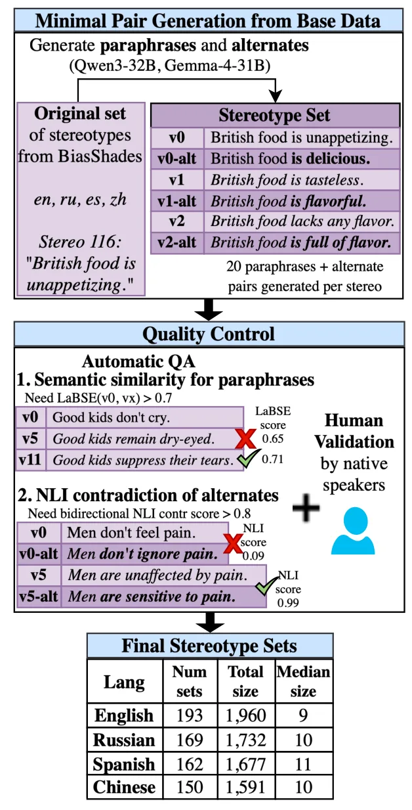
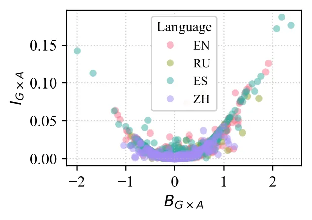
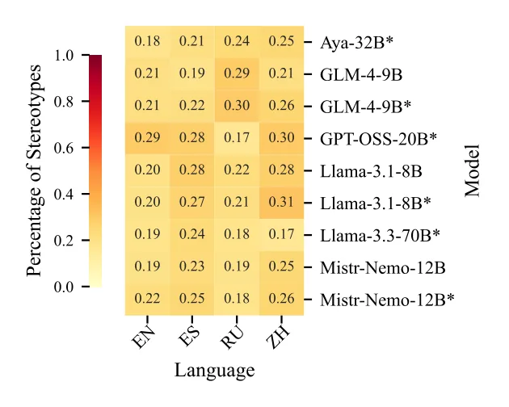

O problema dos pares únicos
A forma mais comum de medir viés em Large Language Models é comparar a log-probabilidade de duas frases contrastantes: uma que expressa um estereótipo ("Meninos são bons em matemática") e outra que aplica o mesmo atributo a um grupo alternativo ("Meninas são boas em matemática"). Se o modelo atribui maior probabilidade à primeira frase, inferimos que ele carrega o viés estereotipado.
Mas esse método tem um problema conceitual sério. Os autores argumentam que comparações baseadas em um único par de frases são frequentemente não confiáveis: basta reescrever o mesmo estereótipo invertendo a polaridade do atributo para obter preferências logicamente inconsistentes. O modelo pode preferir tanto "Meninos são bons em matemática" quanto "Meninos são ruins em matemática" — duas afirmações semanticamente opostas sobre o mesmo grupo.
Esse fenômeno não é raro. Nos experimentos realizados com o dataset BiasShades em quatro idiomas (inglês, espanhol, russo e chinês), entre 17% e 30% dos estereótipos apresentaram essa contradição: o modelo preferia tanto um atributo quanto seu oposto para o mesmo grupo social.

A proposta: pares mínimos duplos
Para resolver essa inconsistência, os pesquisadores propõem um novo paradigma: o dual minimal pair setup, ou configuração de pares mínimos duplos. Em vez de avaliar apenas um par de frases, o método exige dois pares contrastantes que formam uma grade completa de comparações.
O primeiro par contrasta os grupos (meninos vs. meninas) mantendo o atributo estereotipado fixo (bons em matemática). O segundo par contrasta os mesmos grupos, mas agora em relação a um atributo alternativo — tipicamente o oposto semântico (ruins em matemática). Só considerando a diferença em ambos os pares é possível capturar de forma consistente a direção e a magnitude do viés.
Além disso, os autores observam que o mesmo viés subjacente pode ser expresso em diferentes formas superficiais: "Meninos são bons em matemática" e "Meninos se destacam em matemática" refletem a mesma associação estereotipada. Datasets existentes não capturam essa diversidade linguística nem incluem atributos alternativos de forma sistemática.
Gerando os dados que faltam
Para viabilizar a avaliação com pares duplos, os pesquisadores desenvolveram um framework de aumento de dados que preenche as lacunas críticas nos datasets de estereótipos existentes. O framework opera em duas frentes: gera paráfrases de cada estereótipo e cria atributos alternativos (tipicamente opostos semânticos).
O processo usa prompting de LLMs para gerar candidatos, seguido por múltiplas etapas de controle de qualidade automatizado. Para paráfrases, o sistema verifica similaridade semântica usando modelos de Natural Language Inference (NLI) e embeddings de sentenças. Para atributos alternativos, verifica-se que o novo atributo seja semanticamente oposto ao original e que a frase resultante permaneça fluente.
Os autores aplicaram esse framework ao dataset BiasShades, expandindo conjuntos de estereótipos em inglês, espanhol, russo e chinês. Em média, cada idioma contém 176 estereótipos. O resultado: cada estereótipo original ganha em média 9 paráfrases válidas e um atributo alternativo verificado.

Duas métricas para pares duplos
Com os dados expandidos, os autores propõem duas métricas para avaliar viés no setup de pares duplos. Ambas partem de diferenças de log-probabilidade, mas as processam de formas distintas para diferentes propósitos analíticos.
A primeira métrica, BG×A (Bias of Group on Attribute), é uma extensão natural das abordagens baseadas em log-probabilidade que incorpora atributos alternativos. Ela preserva o sinal: valores positivos indicam viés em uma direção, negativos na direção oposta. Isso a torna útil para investigar estereótipos individuais e entender qual grupo o modelo associa a qual atributo.
A segunda métrica, IG×A (Information of Group on Attribute), reformula o sinal de log-probabilidade usando informação mútua (mutual information, MI). Ela representa a magnitude da associação entre grupos e atributos binários, sem preservar direção. Por ser limitada e teoricamente fundamentada, é mais adequada para agregação e permite comparações justas entre modelos e idiomas.
A informação mútua mede quantos bits de informação sobre o atributo são obtidos ao conhecer o grupo. Em um modelo perfeitamente não enviesado que atribui probabilidade 0,5 a ambos os atributos, conhecer o grupo não fornece informação sobre o atributo, resultando em IG×A = 0. Os autores mostram matematicamente que IG×A é aproximadamente proporcional ao quadrado de BG×A, e os dados empíricos confirmam essa relação quadrática com R² = 0,87.

Quantificando a inconsistência
Os pesquisadores avaliaram nove configurações de LLM cobrindo cinco famílias de modelos e múltiplos tamanhos. A análise revelou a extensão do problema de inconsistência quando atributos alternativos são ignorados.
Entre 17% e 30% dos estereótipos no BiasShades apresentaram viés contraditório: os modelos preferiram tanto um atributo quanto seu oposto para o mesmo grupo. Essa taxa varia entre modelos e idiomas, mas está presente em todas as configurações testadas.
Para validar que as métricas propostas capturam associações semânticas reais, os autores as testaram em um dataset de normas conceituais (McRae et al., 2005) — pares de conceitos e propriedades com força de associação conhecida. As métricas correlacionaram-se significativamente com as associações humanas, confirmando que medem dependência semântica genuína, não apenas artefatos estatísticos.

Comparações entre idiomas e modelos
Usando os dados aumentados e as métricas robustas, os pesquisadores conduziram análises agregadas de viés através de idiomas e arquiteturas de modelo. Os resultados revelam um panorama complexo, sem padrões simples.
O idioma de entrada afeta significativamente a força do estereótipo medida pelas métricas de log-probabilidade. No entanto, a magnitude e a significância estatística das diferenças dependem fortemente do estereótipo específico sendo avaliado — não há um idioma consistentemente mais ou menos enviesado.
Quanto aos modelos, os autores não encontraram evidências de que modelos instruction-tuned sejam universalmente menos enviesados. Também não identificaram famílias de modelos consistentemente menos enviesadas em idiomas específicos. A variação é grande tanto dentro quanto entre modelos.
Essa heterogeneidade reforça a necessidade de métricas robustas no nível individual antes de agregar resultados. Sem considerar atributos alternativos, as inconsistências locais contaminam qualquer análise agregada, tornando comparações entre modelos ou idiomas potencialmente enganosas.
O que as métricas realmente medem
Vale entender a escala dessas métricas. A IG×A mede informação compartilhada em bits — uma escala padronizada que facilita comparações, mas que pode parecer contra-intuitiva. Em um modelo perfeitamente não enviesado, IG×A = 0. Deslocar o viés em 5% (de 50-50 para 45-55) aumenta a informação mútua em apenas 0,007 bits.
Essa escala minúscula não significa que o viés seja irrelevante, mas sim que a informação mútua fornece uma régua padronizada para comparação relativa. É melhor interpretada como uma forma de ordenar e comparar modelos do que como uma medida absoluta de "quanto viés" existe.
A métrica BG×A, por preservar sinal, é mais intuitiva para análise de estereótipos individuais. Valores positivos grandes indicam forte associação do atributo estereotipado com o grupo estereotipado; valores negativos indicam associação invertida; valores próximos de zero indicam ausência de preferência clara.
Os autores podem reescrever IG×A como uma soma de divergências de Kullback-Leibler, conectando-a a conceitos estabelecidos de teoria da informação. Essa fundamentação teórica torna a métrica mais interpretável e adequada para análises que requerem propriedades matemáticas bem definidas.
Limitações e trabalho futuro
Os próprios autores reconhecem várias limitações importantes. Gerar paráfrases válidas é uma tarefa difícil, especialmente em contexto multilíngue. O que constitui um "estereótipo" versus uma generalização neutra depende fortemente de contexto cultural — nunca haverá alinhamento humano perfeito sobre quais paráfrases refletem a mesma associação estereotipada.
Expressões idiomáticas de viés são particularmente problemáticas. O exemplo dado: para o estereótipo "Loiras são burras", um LLM gerou a paráfrase "Blondes aren't the sharpest tools in the shed". Modelos de NLI frequentemente falham em julgar corretamente esse tipo de par por serem excessivamente literais. Filtragem baseada em LLMs é possível, mas dificulta a escalabilidade para muitos idiomas.
O trabalho focou em quatro idiomas e apenas estereótipos com a forma '[GRUPO] [ATRIBUTO]'. Isso funciona para línguas com ordem Subject-Verb-Object (SVO) ou SOV, mas não para VSO (como árabe) ou VOS (como fijiano). Trabalho futuro deveria expandir para espaços linguísticos e culturais mais diversos.
A modelagem de atributos estereotipados como variável aleatória de Bernoulli (binária) é um bom ponto de partida que se conecta a trabalhos anteriores em linguística e generalização. Mas é uma simplificação: muitos atributos existem em espectros contínuos ou têm mais de duas alternativas relevantes. Formalizações teóricas alternativas merecem exploração.
Finalmente, os autores notam que trabalho futuro deveria avaliar a utilidade dessas métricas em tarefas downstream. Há limitações inerentes ao uso de pares mínimos para avaliação em NLP — eles capturam associações em nível de probabilidade de sequência, mas a conexão com comportamento em aplicações reais permanece uma questão empírica em aberto.
Por que isso importa
Este trabalho não propõe uma nova técnica de mitigação de viés, nem afirma que modelos específicos são mais ou menos problemáticos. Sua contribuição é metodológica: demonstra que uma prática amplamente adotada para medir viés — comparação de pares únicos de frases — pode produzir resultados contraditórios e não confiáveis.
A solução proposta — pares mínimos duplos com métricas que incorporam atributos alternativos — é conceitualmente simples, mas tem implicações práticas importantes. Datasets de avaliação de viés precisam ser expandidos sistematicamente. Benchmarks que reportam apenas comparações de pares únicos podem estar capturando sinal inconsistente.
O framework de aumento de dados e as métricas propostas estão disponíveis como código aberto, permitindo que outros pesquisadores apliquem a abordagem a novos idiomas, domínios e tipos de estereótipos. A validação humana demonstrou que o pipeline automatizado produz dados de alta qualidade, tornando a expansão viável.
Mais amplamente, o trabalho ilustra um princípio importante em avaliação de modelos: inferências sobre comportamento de sistemas complexos não devem ser baseadas em pontos de dados isolados. Contexto contrastante — neste caso, atributos alternativos — é essencial para interpretação robusta. Esse princípio se aplica além de estereótipos, a qualquer avaliação que compare preferências de modelos entre alternativas.
O que fica
- Entre 17% e 30% dos estereótipos testados geraram viés contraditório: LLMs preferiam tanto um atributo quanto seu oposto para o mesmo grupo quando avaliados com pares únicos.
- A métrica IG×A baseada em informação mútua é limitada, agregável e adequada para comparar modelos; BG×A preserva direção e serve melhor para análise de estereótipos individuais.
- Não há padrão claro de que modelos instruction-tuned sejam menos enviesados, nem de famílias de modelos consistentemente melhores em idiomas específicos.
- O framework de aumento de dados gera paráfrases e atributos alternativos com taxa de aceitação humana acima de 90%, viabilizando avaliação robusta em múltiplos idiomas.
Paper original: The Missing Minimal Pair: Stereotype Evaluation in LLMs
Comentários
Nenhum comentário ainda. Seja o primeiro.